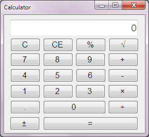

Calculator
Download source code: ZIP file
 
This package contains two demo programs:
- A calculator for .NET intended to demonstrate two things about the CBOR
library:
- First, this program shows how CBOR can serve as a data format for storing application configuration data. Here, this program saves the last position of the window when it exits into a CBOR configuration file.
- Second, this program uses the arbitrary-precision arithmetic capabilities of the CBOR library in its calculations.
- A converter from JSON to CBOR and back, intended to demonstrate the CBOR and JSON features of the CBOR library.
Learn more about the Calculator program.
To compile this package, you first need to install the package "PeterO.Cbor" from the NuGet repository.
Source Code
Source code is available in the project page.
About
Written by Peter O.
Any copyright to this work is released to the Public Domain. In case this is not possible, this work is also licensed under Creative Commons Zero (CC0): https://creativecommons.org/publicdomain/zero/1.0/